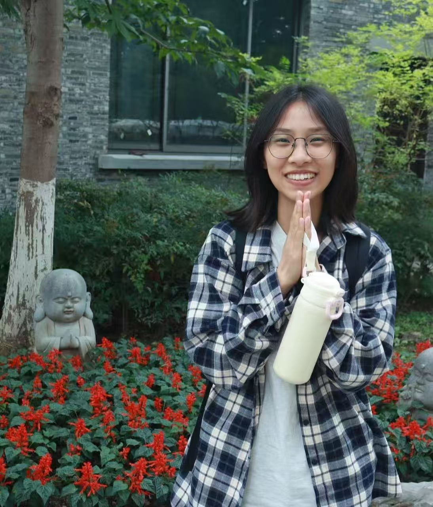
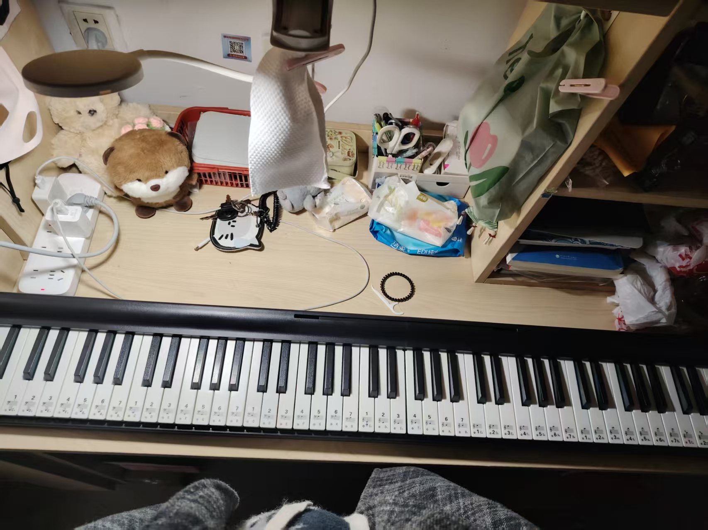
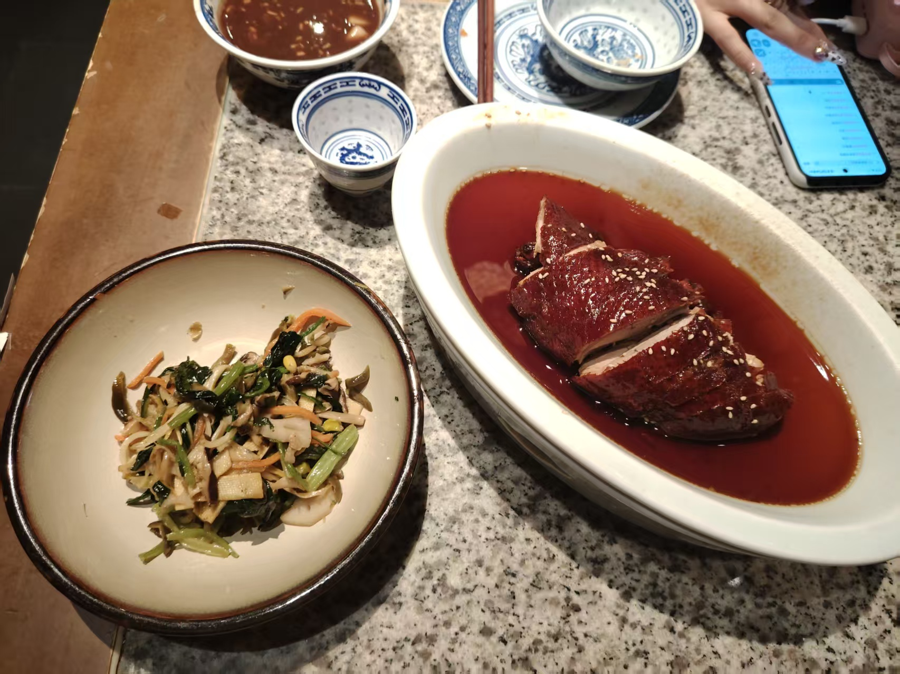
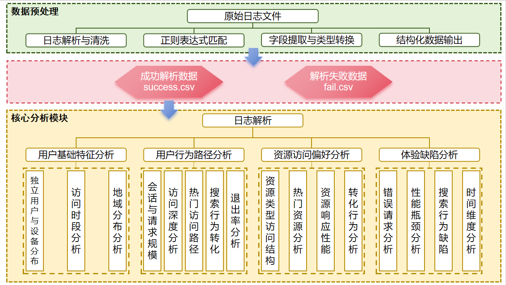

- 姓名：陆奥琪
- 性别：女
- 年龄：21
- 学号：2308080210
- 专业：信息管理与信息系统
- 学校：河海大学大学
自我介绍
哈喽大家好，我的名字是陆奥琪，是一个爱吃肉但怎么都吃不胖的女孩子。是美食主义者，无论去到哪，一定要先吃遍那里好吃的东西，品尝各家的米饭，米饭便是食物中的王中王，百家米的品鉴家。超级喜欢猫咪，希望未来可以拥有一只可爱猫咪，是典型的INFJ＋狮子座，于是你会看到一个兼具INFJ的细腻洞察与狮子座的果断的我。喜欢尝试各种新鲜东西，有一句话说得好：“如果你做一件事既开心又有源源不断的动力，能沉浸其中不怕辛苦，而且越做越兴奋，那这就是你的天赋！”所以，我一直在寻找我的天赋。目前的兴趣爱好有听歌，各种歌曲，苦情歌、DJ、民谣、RNB等等等；打羽毛球、乒乓球、钢琴、追剧等等。有自己的幽默风格，如果你能get到我的笑点，听懂我的笑话，那么！我和你将是天作之合！有小小的抽象，这是我引以为豪的地方，因为这个特点，让我看待生活中的很多人事物都多了一丝有趣。是薛定谔的唯物主义者＋幸福主义者，希望未来，对自己的每个选择都更有自信，去找到更幸福的自己！
个人技能

钢琴

美食评鉴

PPT绘图
技能描述
钢琴：掌握钢琴基本指法，能够弹奏一些流行歌曲。
美食评鉴：对各地美食有独特的品味，善于品尝和评价。
PPT绘图：擅长使用PowerPoint制作精美的演示文稿。